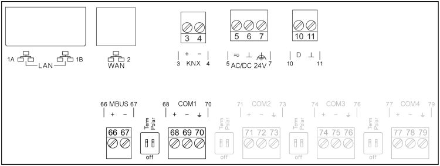

PXC7.E400S

Terminal | Symbol | Description |
1A, 1B |
| LAN: 2 x RJ45 interface for Ethernet with switch |
2 |
| WAN: 1 x RJ45 interface |
3, 4 | KNX | KNX PL-Link (for future use) |
5, 6 | ~, ⏊ | Operating voltage AC 24 V |
7 |
| Functional ground, must be connected on the installation side with the building grounding system (PE). |
10, 11 | D, ⏊ | Digital input (for future use) |
66,67 | MBUS | M-bus interface (for future use) |
68, 69, 70 | COM1 | Interface EIA-485 (Modbus RTU and MS/TP) |
Right side of device | Interface for connecting TXM input/output modules | |